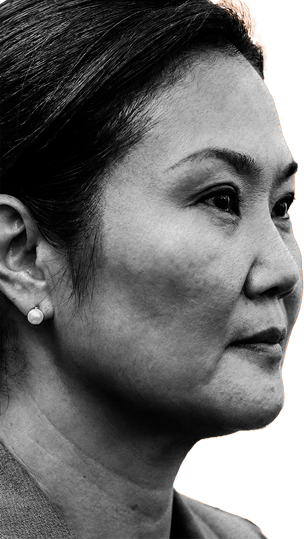
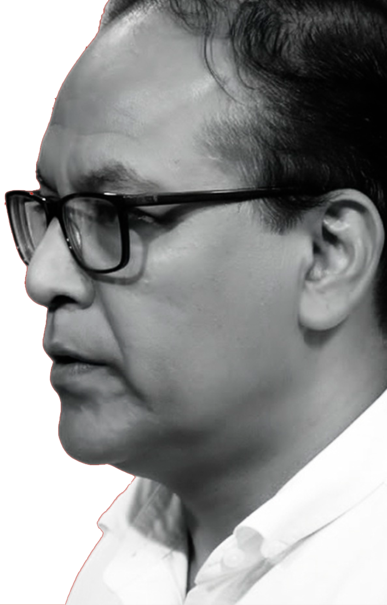

Segunda vuelta
electoral 2026
Dos candidaturas, una decisión: este especial compara los perfiles de Keiko Fujimori y Roberto Sánchez —trayectoria, entorno, ingresos y propuestas— con base en información pública.

